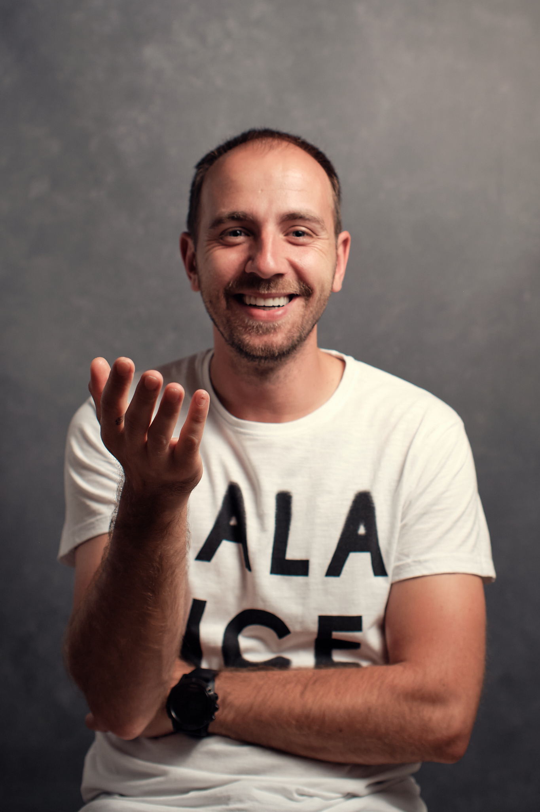

V téhle části si obvykle přečtete o tom, jak se fotograf dostal k focení už v ranném dětství a to tak že mu fotoaparát dali rodiče na hraní nebo někdo z blízké rodiny byl fotografem a podobně. Má první vzpomínka na fotoaparát je také z dětství, není tak poetická, ale třeba to byl ten prvotní impulz. Jakožto zvídavé dítě jsem doma při dlouhé chvíli objevil tátův fotoaparát i s blesky. Ty při zapínání vždy tak provokativně pískaly, tak proč nezjistit co že se to děje uvnitř. Po rozšroubování krytu blesku jsem nic závratného neobjevil. Víceméně podobné "střeva" jako v každé jiné elektronice, kterou jsem měl tou dobou potřebu rozebrat a většinou i složit. Novinkou byla malá skleněná trubička. Nutkání vyzkoušet blesk takhle obnažený nebylo možné překonat :-D Vložil jsem baterie, zapnul vypínačem blesk, ten začal pískat, vše vypadalo že je v pořádku. Nevím co mě to napadlo sáhnout si na tu skleněnou trubičku a v tom... Záblesk. No "šlupka" to byla taková že jsem myslím blýsknul i já.
Po mé první zkušenosti s fototechnikou se mi zrovna nerozsvítilo i když myslím že jsem ještě nějakou dobu svítil. Život šel dál a přišlo rozhodování o střední škole. V té době jsem měl ale úplně jiné zájmy než focení. Ne že bych si vybral špatně, ale jedna z učitelek to vystihla přesně, když rodičům řekla: "On je chytrý, ale nechce se učit". No, nechtěl jsem. Sedět v lavici a učit se věci které mě nezajímají, mě nebavilo. Já chtěl objevovat a zkoušet věci na vlastní kůži. Po období bojů proti školnímu systému přišlo zaměstnání. Za těch bez mála 20 let jsem jich pár vyzkoušel, bavily mě a z každého jsem si vzal nějakou zkušenost do života Nakonec jsem ale vždy dospěl k tomu, že tohle není cesta kterou chci jít, nenaplňovalo mě to. Během toho posledního jsem onemocněl. Doma jsem si pobyl skoro dva roky a to byl nejspíš ten čas který jsem potřeboval k utřízení myšlenek, priorit, poznání sebe samého, k vzdělávání se a k zjištění co vlastně chci dělat po zbytek života.
Pokud nepočítám zásah blesku, začátek mého focení bude někde u rozšíření mobilů s foťákem. Tou dobou ale šlo jen o takové to běžné dokumentování zážitků. Postupem času se měnily telefony, fotky z nich byly čím dál lepší, ale pořád to byly jen "mobilovky". Chtělo to už trochu jiný stroj a tehdy jsem pořídil kompakt Olympus s velkým zoomem a fotil. Možnosti foťáku byly ale omezené a já pořád pokukoval po zrcadlovkách. Tehdy ale byly důležitější výdaje, focení postupem času šlo do pozadí a zase jsem se spokojil s telefonem. Sen o focení zrcadlovkou ale zůstal.
Teď když jsem většinu času musel trávit doma, bylo potřeba ho využít. Pořídil jsem levně Nikon D3100 se setovým zoom objektivem a už to bylo. Začal jsem číst knihy o focení i když mě čtení nikdy moc nebavilo, sledovat výuková videa, hledat inspiraci a hlavně fotit. Konečně jsem u něčeho měl pocit, že mě to naplňuje. A teď čím víc fotím, objevuji kouzla fotografie a dostávám se hlouběji do jejich vzniku, potvrzuje se mi, že jsem konečně našel, co jsem takovou dobu hledal.
Postupně jsem techniku obměnil a od Nikonu přešel k Fujifilm. Zoom objektivy nahradily pevná skla s vyšší světelností a od takového toho domácího focení, focení známých a rodiny přes známé známých až k založení fotoateliéru v mém rodném městě Valašském Meziříčí.
